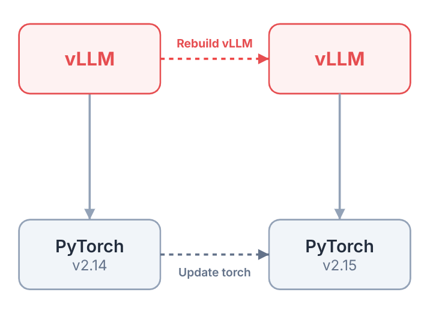
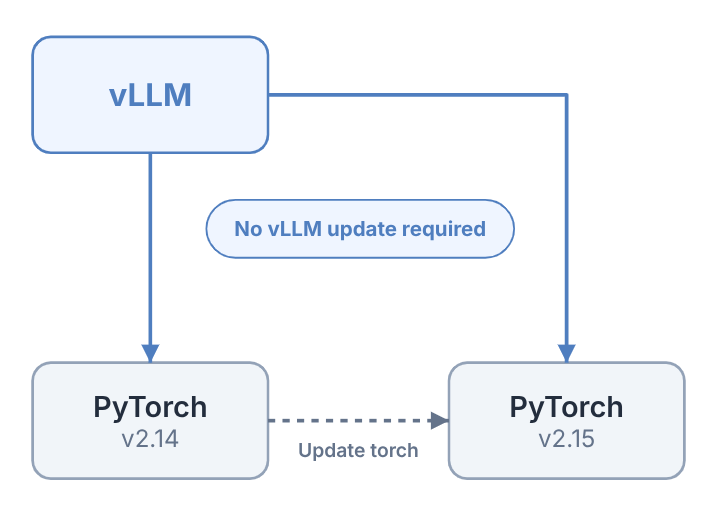
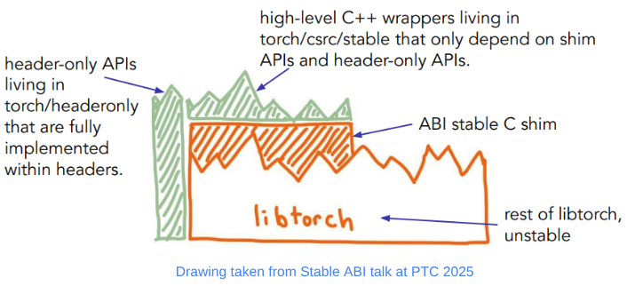
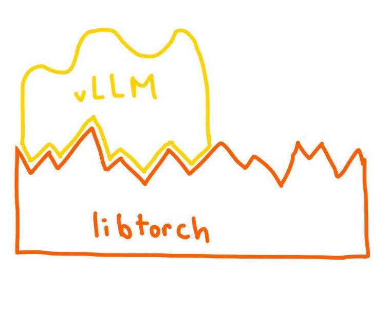
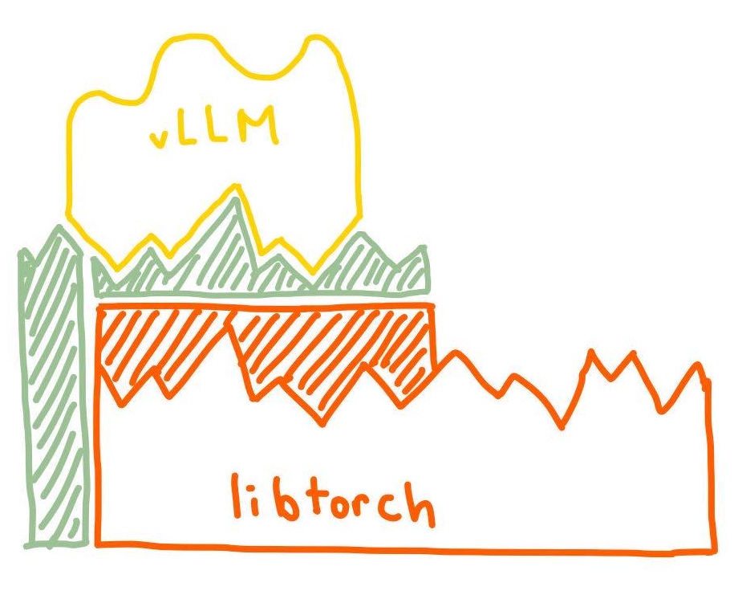
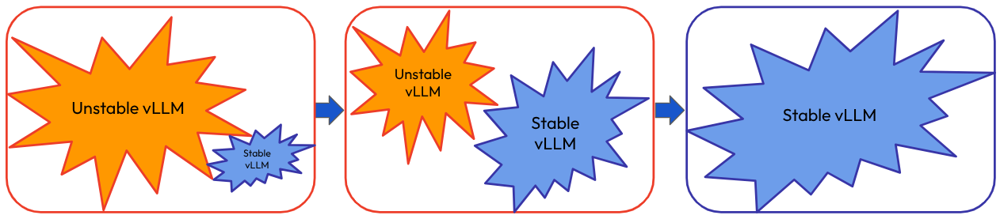

将 vLLM 迁移到 LibTorch 稳定 ABI
引言
vLLM 高度依赖 PyTorch，其 C++ 后端会频繁调用 LibTorch。因此，即使 API 没有变化，LibTorch 二进制接口的变化也可能迫使 vLLM 重新构建和链接。如果更新 LibTorch 时不必重新构建 vLLM，会怎样？这正是 LibTorch 稳定 ABI（Stable ABI）要解决的问题。
采用 LibTorch 稳定 ABI 后，更新 LibTorch 不再要求重新构建或更新 vLLM。我们可以直接替换 torch wheel，再将它导入现有 vLLM 软件包。从 v0.33.0 开始，vLLM 发布采用 LibTorch 稳定 ABI 的 CUDA wheel。


左：不稳定 ABI——升级 torch 后必须重新构建 vLLM。右：稳定 ABI——vLLM 可以直接导入新版 torch。
注意： vLLM 与 PyTorch 的兼容性仍取决于其他因素，包括 Python API、GPU 相关要求（例如最低支持的 CUDA 版本）以及第三方依赖。LibTorch 稳定 ABI 解决的是二进制兼容性，并不会消除这些其他约束。
什么是 LibTorch 稳定 ABI？
应用二进制接口（Application Binary Interface，ABI）规定编译后的代码如何与库交互：函数怎样调用、数据怎样布局、符号怎样命名。即使 API 在源代码层面看起来没有变化，ABI 的改变仍可能要求扩展重新构建。稳定 ABI 会在兼容版本之间保持一组受支持的二进制接口，使使用这些接口的扩展无需重新构建即可继续运行。
PyTorch 的 LibTorch 稳定 ABI 分为三层：
- 稳定的 C shim，公开选定的 LibTorch API；
- C++ 包装器，让 C shim 更易使用；
torch::headeronly中的纯头文件工具，它们不链接libtorch.so。

稳定 ABI 为什么重要
采用稳定 ABI 之前，新版 PyTorch 可能要求重新构建 vLLM，导致新版本及其功能的支持被推迟。采用稳定 ABI 后，同一个 vLLM wheel 可以跨多个兼容的 PyTorch 版本工作，让用户更早升级，也减少软件包发行方的重复构建工作。
对开发者而言，这意味着你可以更新并重新构建 PyTorch，然后直接在 vLLM 中测试这些改动，无需重新构建 vLLM。


左：LibTorch 变化时，vLLM 也需要变化。右：vLLM 可以独立于 LibTorch 变化。
权衡
LibTorch 稳定 ABI 只覆盖完整 LibTorch 的一个有限子集。虽然稳定 C shim 和更高层的 C++ 便利包装器已经支持许多常用操作，但并非全部操作都已覆盖。例如，在迁移期间，is_pinned() 没有对应的稳定接口。
好在通用的 torch_call_dispatcher C shim 可以让我们通过 dispatcher，以 ABI 稳定的方式调用 ATen 操作。这样既能保持原有行为，也能获得 ABI 稳定性。这次迁移也帮助 PyTorch 团队了解哪些 API 使用频繁；在 PyTorch 2.14 中，他们加入了稳定的 C++ is_pinned() 方法。
迁移前，直接调用 LibTorch 方法：
if (cpu_tensor.is_pinned())
迁移后，通过 ABI 稳定的 dispatcher 调用：
std::array<StableIValue, 2> is_pinned_stack{
torch::stable::detail::from(cpu_tensor),
torch::stable::detail::from(std::nullopt)};
TORCH_ERROR_CODE_CHECK(torch_call_dispatcher(
"aten::is_pinned", "", is_pinned_stack.data(), TORCH_ABI_VERSION));
if (torch::stable::detail::to<bool>(is_pinned_stack[0]))
第二项权衡是少量额外的主机端开销。稳定 C shim 会增加类型转换开销；对于依赖 torch_call_dispatcher 的部分包装器，还会增加算子查找和装箱开销。这些开销通常可以忽略，并且在 CUDA Graph 预热后会消失；但在 eager 模式中反复启动极快的内核时，它们可能产生影响。迁移期间，我们没有观察到明显的运行时性能回退。
将 vLLM 迁移到稳定 ABI
我们把稳定 ABI 迁移拆分为以下步骤。
1. 评估现状
首先，我们评估 vLLM 能否使用当时已有的稳定 API 完成迁移。我们盘点了项目对 PyTorch API 的调用，识别缺口，并规划填补缺口所需的稳定 API。相关工作记录在将 vLLM CUDA 构建迁移至 LibTorch 稳定 ABI 的原始 RFC 中。
2. 将 AutogradFunction 和 meta 函数迁移到 Python
截至目前，LibTorch 稳定 ABI 尚不支持稳定的 SymInt，因此 meta 函数需要用 Python 编写，不能继续放在 C++ 中。幸运的是，vLLM 的大多数 meta 函数已经使用 Python，实现少数剩余函数的迁移相对简单，也让项目更加一致。
类似地，稳定 ABI 没有公开 PyTorch 的 autograd 机制，所以 AutogradFunction 也必须使用 Python 编写。对于 vLLM 这样的推理引擎，这一点影响较小；但如果实现 backward 函数，就需要将其放在 Python 中。
3. 建立必要的迁移脚手架
vLLM 是一个大型项目，仅 CUDA 构建就包含 175 个以上 .cpp/.cu 源文件和另外 120 多个头文件。一次性迁移全部代码不仅难以管理，也难以审查。
因此，我们先创建了独立的稳定库（参见首个迁移 PR #31509 中的 CMakeLists.txt 更新），再将内核分批迁移进去。构建标志 TORCH_TARGET_VERSION 会在稳定库包含任何不稳定 LibTorch 头文件时让构建失败，从而帮助保持 ABI 稳定性。

随着稳定库不断增长，不稳定库逐渐缩小，最终消失。
4. 确保通过 dispatcher 注册算子
目前，注册 LibTorch 稳定算子需要使用 STABLE_TORCH_LIBRARY。如果你已经使用 TORCH_LIBRARY 注册算子，这套机制会很熟悉。新的稳定注册方式最主要的区别是：实现需要由 TORCH_BOX 包装。它会生成一个适配器，在 C++ 数据类型与可穿过 PyTorch 稳定 ABI 的通用 StableIValue 类型之间完成装箱和拆箱。
如果内核通过其他机制注册，例如 pybind11，建议先把注册转换为 TORCH_LIBRARY，再迁移至 STABLE_TORCH_LIBRARY。下文“迁移过程中的挑战”会进一步说明这一点。
5. 将每个源文件迁移到稳定 API
完成步骤 1～4 后，就可以逐个将源文件迁移至稳定 API。所包含的 PyTorch 头文件应来自 C++ 稳定包装器、纯头文件工具或 C shim 本身：
torch/csrc/stable
torch/headeronly
torch/csrc/stable/c/shim.h（或 torch/csrc/inductor/aoti_torch/c/shim.h）
大部分源文件修改都是机械式替换，例如：
torch::Tensor → torch::stable::Tensor
at::kInt → torch::headeronly::ScalarType::Int
t.view({...}) → torch::stable::view(t, {...})
为了帮助迁移，我们为 AI agent 创建了一组技能，用来把现有 API 映射到稳定版本，并标记常见错误，例如与迁移无关的改动。这些技能也支持更早的步骤 1～4。它们已经在实际工作中发挥作用，但我们还没有开发相应评测来衡量效果。详见 abi-stable-skills。
6. 验证
vLLM 服务着多个行业的数百万用户，我们不希望迁移打断任何用户的工作流程。因此，整个列表中最重要的一步是验证迁移没有引入重大变化：运行适当的单元测试和性能测试，并逐行人工审查每个迁移 diff，确保没有意外更新。
除了验证正确性，还需要确认新库确实满足 LibTorch ABI 稳定性。我们使用 torch-abi-audit（感谢 Ralf Gommers）完成这项工作。该工具检查 .so 文件，并将 PyTorch 符号分为稳定和不稳定两类。如果没有不稳定符号，该库就是 LibTorch ABI 稳定的。它还会报告提供所有所需稳定符号的最低 LibTorch 版本，例如 min-torch=2.11.0。
我们用它追踪迁移进度、检查回退，现在也在 vLLM CI 中使用它，保证 wheel 持续满足 LibTorch ABI 稳定性。
迁移依赖之前：
torch-abi-audit vllm
Package: vllm
Root: /workspaces/vllm_container/vllm/vllm
Torch ABI: UNSTABLE
Min torch: 2.11.0
CPython ABI: mixed
Extensions: 10
Bundled libs: 0
-- extensions --
[STABLE ] [abi3-ok ] _C_stable_libtorch.abi3.so (stable_shim=88, unstable=0) min-torch=2.11.0
[UNSTABLE] [abi3-ok ] _flashmla_C.abi3.so (stable_shim=0, unstable=70)
[UNSTABLE] [abi3-ok ] _flashmla_extension_C.abi3.so (stable_shim=0, unstable=68)
[STABLE ] [abi3-ok ] _moe_C_stable_libtorch.abi3.so (stable_shim=72, unstable=0) min-torch=2.11.0
[UNSTABLE] [abi3-ok ] _qutlass_C.abi3.so (stable_shim=0, unstable=59)
[NO-TORCH] [abi3-ok ] cumem_allocator.abi3.so
[NO-TORCH] [abi3-ok ] spinloop.abi3.so
[UNSTABLE] [uses-private-api ] third_party/deep_gemm/_C.cpython-312-x86_64-linux-gnu.so
[UNSTABLE] [abi3-ok ] vllm_flash_attn/_vllm_fa2_C.abi3.so
[UNSTABLE] [abi3-ok ] vllm_flash_attn/_vllm_fa3_C.abi3.so
vLLM 构建依赖
只迁移 vLLM 自身源代码，并不能证明整个 vLLM wheel 都具备 ABI 稳定性。要让 wheel 完全稳定，其依赖 LibTorch 的编译依赖也必须采用 LibTorch 稳定 ABI。vLLM 当时有七个这样的依赖：
| 依赖 | vLLM fork 已迁移 | 上游已迁移 |
|---|---|---|
| FlashMLA | ✅ | ✅ |
| DeepGEMM | ✅ | 🚧 进行中 |
| FlashAttention-2 | ✅ | 🚧 已提交稳定化 PR |
| FlashAttention-3 | ✅ | ✅ |
| DeepSelect | ✅ | 🚧 进行中 |
| FlashKDA | ✅ | ❌ |
| QuTLASS | 不适用 | ✅ |
完成 vLLM 树内代码迁移后，这些依赖也逐一迁移到 LibTorch 稳定 ABI，使整个 vLLM CUDA wheel 获得 ABI 稳定性。
torch-abi-audit vllm
Package: vllm
Root: /workspaces/vllm_container/vllm/vllm
Torch ABI: STABLE
Min torch: 2.13.0
CPython ABI: abi3
Extensions: 13
Bundled libs: 0
-- extensions --
[STABLE ] [abi3-ok] _C_stable_libtorch.abi3.so min-torch=2.11.0
[STABLE ] [abi3-ok] _deepselect_C.abi3.so min-torch=2.10.0
[STABLE ] [abi3-ok] _flashkda_C.abi3.so min-torch=2.11.0
[STABLE ] [abi3-ok] _flashmla_C.abi3.so min-torch=2.11.0
[STABLE ] [abi3-ok] _flashmla_extension_C.abi3.so min-torch=2.11.0
[STABLE ] [abi3-ok] _moe_C_stable_libtorch.abi3.so min-torch=2.11.0
[STABLE ] [abi3-ok] _qutlass_C.abi3.so min-torch=2.13.0
[NO-TORCH] [abi3-ok] cumem_allocator.abi3.so
[NO-TORCH] [abi3-ok] fs_io_C.abi3.so
[NO-TORCH] [abi3-ok] spinloop.abi3.so
[STABLE ] [abi3-ok] third_party/deep_gemm/_C_extension.abi3.so min-torch=2.11.0
[STABLE ] [abi3-ok] vllm_flash_attn/_vllm_fa2_C.abi3.so min-torch=2.10.0
[STABLE ] [abi3-ok] vllm_flash_attn/_vllm_fa3_C.abi3.so min-torch=2.10.0
时间线
| 日期 | 进展 |
|---|---|
| 2025 年 10 月 15 日 | 发起讨论稳定 ABI 迁移的 RFC |
| 2025 年 11 月 13 日 | 将 C++ meta 函数重写为 Python，PR #28595 |
| 2025 年 12 月 29 日 | 首个迁移 PR #31509 创建 |
| 2026 年 3 月 19 日 | 首个迁移 PR 完成 |
| 2026 年 5 月 | 创建 abi-stable-skills |
| 2026 年 6 月 | 合并 12 个以上 PR，使 vLLM 树内代码达到 LibTorch ABI 稳定 |
| 2026 年 7 月 27～29 日 | 首批将 DeepGEMM 从 pybind11 迁移到稳定 ABI 的 PR 创建 |
| 2026 年 7～9 月 | FlashMLA、QuTLASS、FlashAttention 2、FlashKDA、FlashAttention 3 和 DeepSelect 迁移到稳定 ABI |
| 2026 年 10 月 15 日 | DeepGEMM 完成迁移；vLLM CUDA wheel 达到 LibTorch ABI 稳定 |
迁移过程中的挑战
最大的挑战是跟上这个大型快速演进项目的变化。迁移补丁开发期间，上游文件经常发生改变，因此补丁在合并前需要持续更新。vLLM 的外部依赖也要求我们跨项目协调，并为迁移构建支持。
DeepGEMM：迁移案例
DeepGEMM 集中体现了上述多个挑战。迁移过程中，DeepGEMM 从版本 1 升级到版本 2，并加入了 DeepJIT；后者同样依赖 LibTorch，也需要迁移。随后，vLLM 从上游 deepseek-ai/DeepGEMM 仓库切换到自己的 vllm-project/DeepGEMM fork，迫使我们在新 fork 上重新执行迁移。
上游变化只是挑战的一部分。由于 DeepGEMM 通过 pybind11 注册算子，在采用稳定 ABI 之前，我们还必须把注册方式迁移到 TORCH_LIBRARY。例如，fp8_fp4_paged_mqa_logits 原先这样绑定：
m.def("fp8_fp4_paged_mqa_logits", &fp8_fp4_paged_mqa_logits,
py::arg("q"), ...,
py::arg("max_context_len"), ...);
其中，q 的类型是 std::tuple<Tensor, std::optional<Tensor>>&，max_context_len 是 const int&。为了让参数兼容 TORCH_LIBRARY，我们加入一个包装器，分别接收 tuple 的各个元素，并在 C++ 签名中使用 int64_t：
static torch::Tensor fp8_fp4_paged_mqa_logits(
const torch::Tensor& q, const c10::optional<torch::Tensor>& q_sf, ...
const int64_t& max_context_len, ...) {
return attention::fp8_fp4_paged_mqa_logits(
std::make_tuple(q, q_sf), ...,
static_cast<int>(max_context_len), ...);
}
现在可以用 TORCH_LIBRARY 注册：
TORCH_LIBRARY_FRAGMENT(deep_gemm, m) {
m.def("fp8_fp4_paged_mqa_logits(Tensor q, Tensor? q_sf, ..., int max_context_len, ...) -> Tensor");
}
TORCH_LIBRARY_IMPL(deep_gemm, CUDA, m) {
m.impl("fp8_fp4_paged_mqa_logits", TORCH_FN(fp8_fp4_paged_mqa_logits));
}
Python 接口先拆开 tuple，再调用已注册的算子：
def fp8_fp4_paged_mqa_logits(q, ..., max_context_len, ...):
q_fp, q_sf = q[0], q[1]
return _torch_ops.fp8_fp4_paged_mqa_logits(
q_fp, q_sf, ..., max_context_len, ...)
这样既能改用 TORCH_LIBRARY，又不改变面向用户的 API。
DeepGEMM 完成 TORCH_LIBRARY 迁移后，稳定 ABI 迁移就与其他依赖类似：替换不稳定 API，并更新算子注册方式。
STABLE_TORCH_LIBRARY_FRAGMENT(deep_gemm, m) {
m.def("fp8_fp4_paged_mqa_logits(Tensor q, Tensor? q_sf, ..., int max_context_len, ...) -> Tensor");
}
STABLE_TORCH_LIBRARY_IMPL(deep_gemm, CUDA, m) {
m.impl("fp8_fp4_paged_mqa_logits", TORCH_BOX(fp8_fp4_paged_mqa_logits));
}
DeepGEMM 是 vLLM 最后一个需要迁移的构建依赖；完成这项工作后，整个 vLLM wheel 都实现了 LibTorch ABI 稳定。
在新版 PyTorch 上运行示例
示例脚本：
# stable_abi_demo.py
import os
os.environ.setdefault("VLLM_USE_FLASHINFER_SAMPLER", "0")
import torch
import vllm
from vllm import LLM, SamplingParams
print(f"PyTorch runtime: {torch.__version__}")
print(f"vLLM: {vllm.__version__}")
llm = LLM(
model="HuggingFaceTB/SmolLM2-135M-Instruct",
max_model_len=128,
gpu_memory_utilization=0.1,
enforce_eager=True,
)
outputs = llm.generate(
["The capital of France is"],
SamplingParams(temperature=0, max_tokens=8),
)
print(outputs[0].outputs[0].text)
使用 PyTorch 2.14.1 构建 vLLM 并运行演示：
> python stable_abi_demo.py
PyTorch runtime: 2.14.1+cu132
vLLM: 0.1.dev24716+gcb95d994f.d20261105
Paris. Paris is a city known for
把 PyTorch wheel 更新至 torch==2.15.0：
uv pip install torch==2.15.0 \
--index-url https://download.pytorch.org/whl/cu132
不重新构建 vLLM，直接再次运行演示：
> python stable_abi_demo.py
PyTorch runtime: 2.15.0+cu132
vLLM: 0.1.dev24716+gcb95d994f.d20261105
Paris. Paris is a city known for
为了清晰起见，上述输出省略了常规 vLLM 初始化日志、进度条和无关的弃用警告。
后续工作
现在 vLLM 的 CUDA 构建已经使用 LibTorch 稳定 ABI，下一步是让 vLLM 的所有构建都达到 ABI 稳定，包括 CPU 和 ROCm 构建。这些迁移的规模比 CUDA 迁移小，但对 vLLM 生态仍然重要。
ROCm 构建与 CUDA 构建共享许多源文件：hipify 会把 .cu 文件转换成 .hip 文件，因此这些共享文件已经使用 LibTorch 稳定 ABI。现在只剩少数 ROCm 专用文件需要迁移。
我们也在扩展稳定 API 的覆盖范围，让 vLLM 及其依赖不再需要额外包装器。随着 API 覆盖面的扩大，我们还会更新 PyTorch 上游测试，确保这些 API 持续保持 LibTorch ABI 稳定。
主要贡献者致谢
- vLLM 社区： Shengqi Chen（主要协调者）、Jiangyun Zhu（DeepSelect fork 迁移）、Thien Tran（FlashKDA fork 迁移）、Roberto L. Castro（QuTLASS 上游迁移）、Kaichao You（路线图），以及所有审查 PR 并提供建议的维护者。
- PyTorch 社区： Jane Xu（项目负责人、FlashMLA fork 与上游迁移、abi-stable-skills 项目）、Chris Leonard（主要迁移工作）、Mikayla Gawarecki（树内源文件的早期迁移工作）、Ralf Gommers（torch-abi-audit 项目）。
- DeepSeek： Chenggang Zhao、Yichen Yan、Shengyu Liu。
本文由 Codex 根据 vLLM 英文原文翻译整理；如有歧义，请以原文为准。